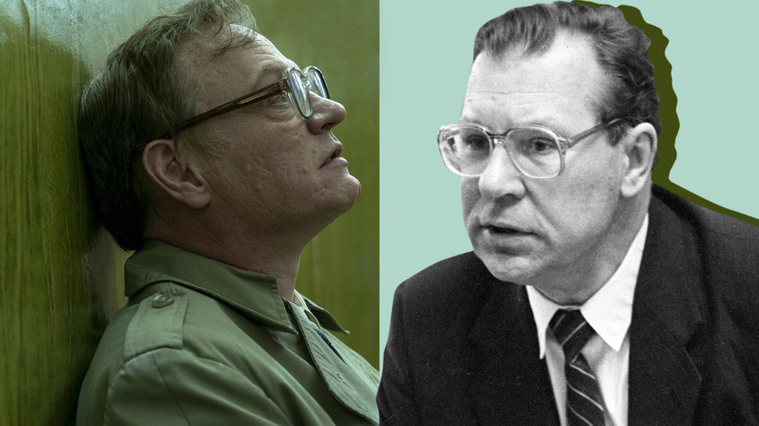
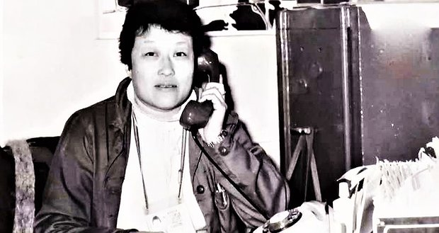
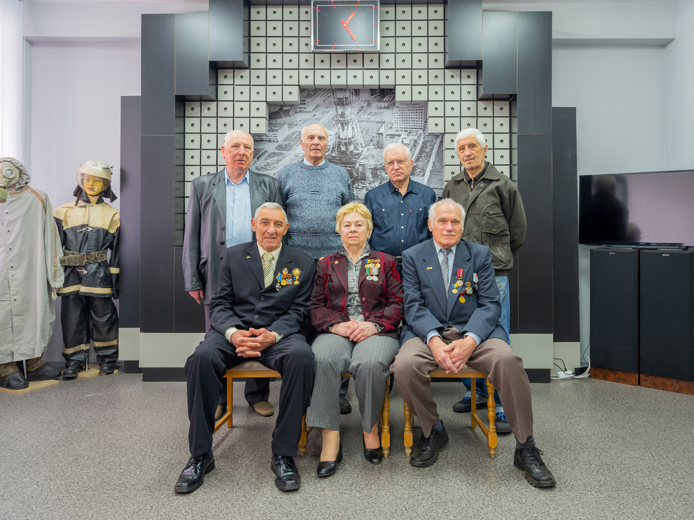

The Chernobyl disaster occurred on April 26, 1986, at the No. 4 reactor in the Chernobyl Nuclear Power Plant, near the city of Pripyat in the Soviet Union (now Ukraine). It is considered the worst nuclear disaster in history, both in terms of cost and casualties. A routine safety test went catastrophically wrong due to a combination of reactor design flaws and operator errors, leading to a steam explosion and a subsequent fire that released massive amounts of radioactive particles into the atmosphere.
The disaster forced the evacuation of over 100,000 people from the surrounding areas, creating a 30-kilometer Exclusion Zone that remains largely uninhabited to this day. The long-term effects include increased rates of cancer, environmental contamination, and the displacement of entire communities. The disaster also had a profound impact on global nuclear policy and safety standards.
If the video does not load, you can watch it on YouTube.
Valery Legasov was the chief of the commission investigating the Chernobyl disaster. A prominent Soviet inorganic chemist, he played a crucial role in mitigating the disaster’s aftermath, advocating for the use of sand, clay, and boron to extinguish the fire and limit the spread of radiation. Despite facing political pressure to downplay the disaster, Legasov insisted on transparency, revealing the reactor’s design flaws to the international community. Tragically, the stress and political backlash took a toll on him, and he died by suicide in 1988, leaving behind audio recordings that detailed the truth about Chernobyl.
Maria Protsenko was the chief architect of Pripyat and one of the key figures in organizing the city’s evacuation after the disaster. At 53 years old, she worked tirelessly to ensure the safe evacuation of Pripyat’s 50,000 residents, coordinating buses and logistics under extreme pressure. Protsenko herself was exposed to high levels of radiation during the process and later suffered from health issues as a result. Her efforts saved countless lives, and she remained a vocal advocate for the displaced residents of Pripyat until her death in 2012.
The "liquidators" were the hundreds of thousands of workers—soldiers, firefighters, miners, and volunteers—who were sent to Chernobyl to contain the disaster. They cleared radioactive debris, built the sarcophagus around Reactor 4, and decontaminated the surrounding areas, often with minimal protective gear. Many liquidators, like firefighter Vladimir Pravik, who was among the first to respond to the explosion, suffered acute radiation sickness and died within weeks. Others faced long-term health issues, including cancer. Their bravery and sacrifice are commemorated in monuments like the Chernobyl Town Monument.
